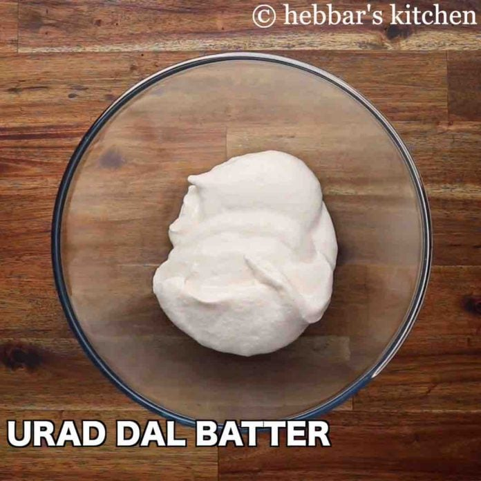
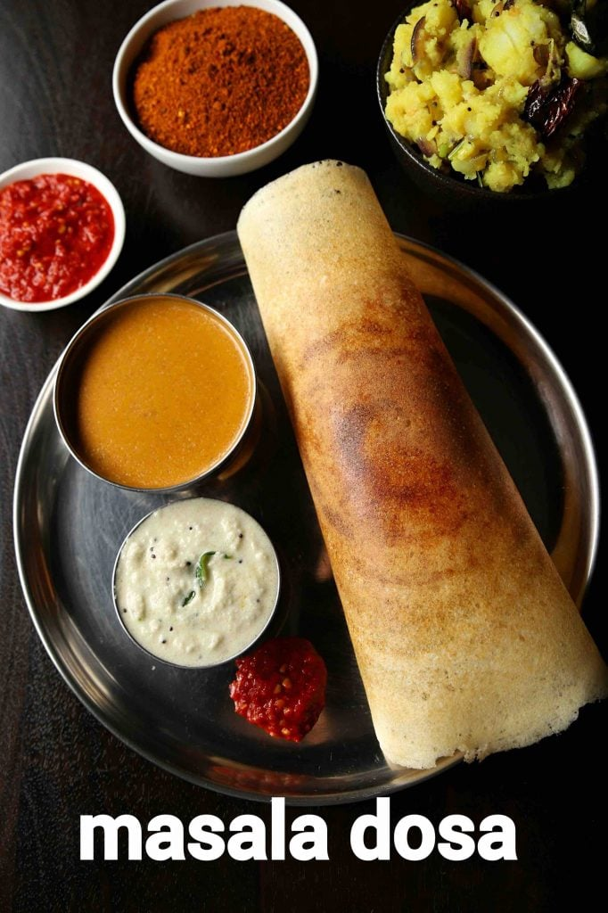
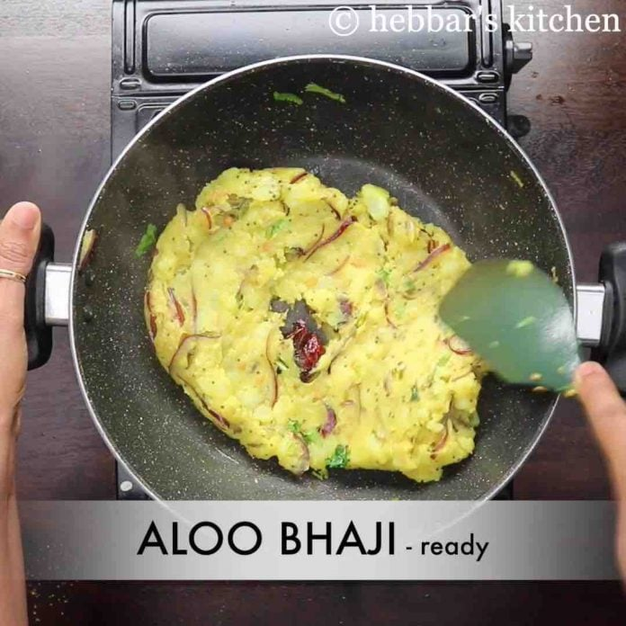

Masala Dosa Recipe | Crispy Masale Dose | How
to make Masala Dosa with detail photo and video recipe. an easy and
popular, tasty south indian staple breakfast recipe made with rice and urad dal. basically an extension to the
traditional dosa recipe, where dosa is made crisp and stuffed with potato masala. it is perhaps one of the
famous dishes from south india, which is can be served for morning breakfast or also as an evening snack with
coconut chutney and sambar.
TABLE OF CONTENTS
- Watch Video
- Recipe card
- Ingredients
- Steps
- Masala Dosa batter Preparation
- Dosa preparation
- Notes
- Faqs
Masala Dosa Recipe | Crispy Masale Dose | How to make Masala Dosa
with step-by-step photo and video recipe. south
indian recipes are known for healthy and steamed rice-based breakfast recipes. these generally fall into either
the dosa or idli category which in turn has many varieties with subtle variations. under the dosa category, the
most popular variation is masala dosa or locally known as masale dose served with a choice of coconut chutney
and spicy sambar.
Well, there is a great story about the origin of the famous masale dosa. There are many stories around india,
but according to the wiki, it originated from my hometown udupi. it was here in udupi, the dosa’s were made
crisp and served. one of the local restaurants in udupi started to serve potato masala stuffed dosa as a
variation and also to lower the coconut chutney consumption. in those days, coconut-based dishes were considered
pricey and dosa’s cannot be consumed without any side dish. gradually stuffed dosa became one of the norms and
the migrant community took this variety to mumbai and exposed it to a broader audience. it was very well
received in the cosmopolitan city and that’s how it became one of the popular dose varieties.
Masala Dosa Batter preparation
- masala dosa batter preparation:
- firstly, in a large bowl take 3 cup sona masuri rice and ½ tsp methi
- rinse well and soak in enough water for 4 hours.
- in another bowl take 1 cup urad dal, 2 tbsp toor dal and 2 tbsp chana dal.
- rinse well and soak in enough water for 2 hours.
- after soaking dal for 2 hours, drain off the water and transfer to the grinder. you can also grind in
mixi
if you do not have access to a grinder.
- add water as required and blend to smooth paste.
- scrape sides. the smooth and fluffy batter will be ready after 40 minutes.
- transfer the batter to a large vessel and keep aside
- mix well making sure everything is well combined.
- once the batter is well fermented, mix gently, without disturbing the air pockets.
- transfer 4 cups of fermented batter to a small bowl and add 1 tsp salt.
- mix well until the salt is well combined. masala dosa batter is ready. keep aside.

Masala Dosa preparation
- firstly, add a ladleful of batter on hot tawa.
- spread as thin as possible making a crispy dosa.
- take 1 tsp of butter and spread uniformly
- also, place 2 tbsp of prepared aloo masala in the centre.
- roast until the dosa turns golden brown and crisp.
- scrape the sides of dosa and roll the dosa.
- finally, masala dosa recipe is ready to serve with coconut chutney and sambar.

Aloo Bhaji Preparation
- firstly, in a large kadai heat 2 tbsp oil and splutter 1 tsp mustard, 1 tsp urad dal, 1 tsp chana dal, 1
dried red chilli, few curry leaves, pinch hing.
- now add 2 chilli and 1 inch ginger. saute well.
- also, add 1 onion and saute until onions shrink slightly.
- further, add ¼ tsp turmeric and 1 tsp salt. saute well.
- now add 3 potato and mix well, mash slightly making sure everything is well combined.
- turn off the flame and add 2 tbsp coriander and 2 tbsp lemon juice.
- mix well and aloo bhaji for masala dosa is ready. keep aside.

Notes
- firstly, make sure the dosa batter is well fermented else dosa will not turn up good.
- additionally, adjust the amount of spiciness of aloo masala to your taste.
- also, recommend using cast iron tawa for crispy dosa
- finally, masala dosa recipe tastes great when prepared crispy.